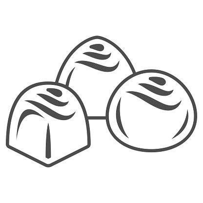

TRUFAS: UN POSTRE SIMPLEMENTE IRRESISTIBLE

La trufa de chocolate es un dulce con aspecto y sabor similar al bombón pero elaborado con una mezcla de chocolate negro fundido, mantequilla, azúcar glas, yema de huevo y a veces crema de leche.
Esta mezcla es realmente una imitación de la fungosidad real de la trufa que crece alrededor de las raíces de determinados árboles en Francia e Italia.
Una vez que las trufas se forman son enrolladas en cacao polvo para simular la 'suciedad' en la que se cultivan las trufas reales, y aunque este es recubrimiento tradicional, también pueden estar revestidas de confituras como capas de pastel, azúcar, trocitos de frutos secos, chocolate templado e incluso coco rallado.